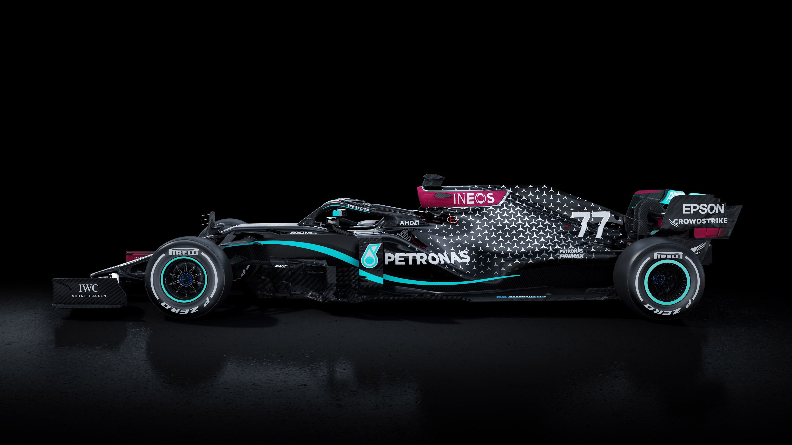
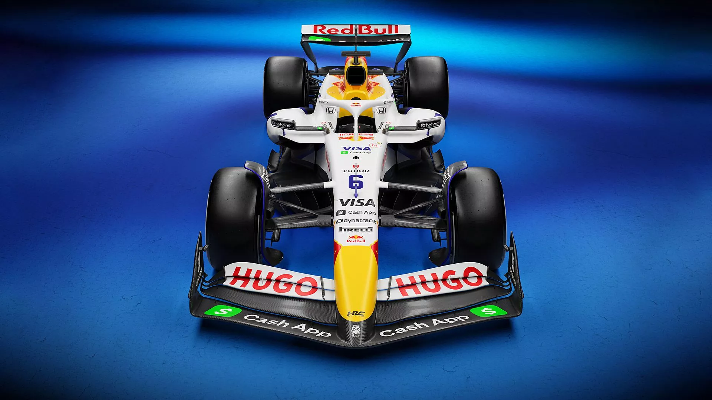

Drivers
Lando Norris (McLaren)

Name: Lando Norris
Age: 25
Country: United Kingdom
F1 Career: 2019–present (7 yrs)
Wins: 3
Pole Positions: 9
Fastest Laps: 11
🏆 Podiums: ~25
Career Points: ~860
Oscar Piastri (McLaren)

Name: Oscar Piastri
Age: 24
Country: Australia
F1 Career: 2023–present (3 yrs)
Wins: ~6
Pole Positions: ~4
Fastest Laps: ~3
🏆 Podiums: ~20
Career Points: ~900
Max Verstappen (Red Bull)

Name: Max Verstappen
Age: 28
Country: Netherlands
F1 Career: 2015–present (11 yrs)
Wins: 68
Pole Positions: 47
Fastest Laps: 35
🏆 Podiums: 122
Career Points: ~3345
Yuki Tsunoda (Racing Bulls)

Name: Yuki Tsunoda
Age: 25
Country: Japan
F1 Career: 2021–present
Wins: 0
Pole Positions: 0
Fastest Laps: 0
🏆 Podiums: 0–1
Career Points: ~60
George Russell (Mercedes)

Name: George Russell
Age: 27
Country: United Kingdom
F1 Career: 2019–present (7 yrs)
Wins: 1–2
Pole Positions: ~1
Fastest Laps: ~3
🏆 Podiums: ~12
Career Points: ~650
Kimi Antonelli (Mercedes)

Name: Kimi Antonelli
Age: 18–19
Country: Italy
F1 Career: 2025–present (rookie)
Wins: 0
Pole Positions: 1
Fastest Laps: 1
🏆 Podiums: 1
Career Points: 0
Charles Leclerc (Ferrari)

Name: Charles Leclerc
Age: 26–28
Country: Monaco
F1 Career: 2018–present (8 yrs)
Wins: ~6–8
Pole Positions: ~12
Fastest Laps: ~8
🏆 Podiums: ~35
Career Points: ~900
Lewis Hamilton (Ferrari)

Name: Lewis Hamilton
Age: 40
Country: United Kingdom
F1 Career: 2007–present (19 yrs)
Wins: 103
Pole Positions: 104
Fastest Laps: 67
🏆 Podiums: 202
Career Points: ~4860
Fernando Alonso (Aston Martin)

Name: Fernando Alonso
Age: 44
Country: Spain
F1 Career: 2001–present (with breaks)
Wins: 32
Pole Positions: 22
Fastest Laps: ~23
🏆 Podiums: ~99
Career Points: ~2200
Lance Stroll (Aston Martin)

Name: Lance Stroll
Age: 27
Country: Canada
F1 Career: 2017–present (9 yrs)
Wins: 1
Pole Positions: 1
Fastest Laps: ~3
🏆 Podiums: ~6
Career Points: ~350
Alexander Albon (Williams)

Name: Alexander Albon
Age: 28
Country: Thailand/UK
F1 Career: 2019–present (with previous years)
Wins: 0
Pole Positions: 0
Fastest Laps: ~2
🏆 Podiums: ~4
Career Points: ~200
Carlos Sainz (Williams)

Name: Carlos Sainz
Age: 31
Country: Spain
F1 Career: 2015–present (11 yrs)
Wins: ~3
Pole Positions: ~2
Fastest Laps: ~5
🏆 Podiums: ~25
Career Points: ~800
Nico Hülkenberg (Kick Sauber)

Name: Nico Hülkenberg
Age: 36
Country: Germany
F1 Career: 2010–present (with gaps)
Wins: 0
Pole Positions: 0
Fastest Laps: ~2
🏆 Podiums: ~3
Career Points: ~400
Gabriel Bortoleto (Kick Sauber)

Name: Gabriel Bortoleto
Age: 19–20
Country: Brazil
F1 Career: 2025–present (rookie)
Wins: 0
Pole Positions: 0
Fastest Laps: 0
🏆 Podiums: 0
Career Points: 0
Oliver Bearman (Haas)

Name: Oliver Bearman
Age: 19–20
Country: United Kingdom
F1 Career: 2024–present
Wins: 0
Pole Positions: 0
Fastest Laps: 0
🏆 Podiums: 0–1
Career Points: ~30
Esteban Ocon (Haas)

Name: Esteban Ocon
Age: 29
Country: France
F1 Career: 2016–present
Wins: 1
Pole Positions: 0
Fastest Laps: ~2
🏆 Podiums: ~7
Career Points: ~320
Isack Hadjar (Racing Bulls)

Name: Isack Hadjar
Age: 19–20
Country: France
F1 Career: 2025–present (rookie)
Wins: 0
Pole Positions: 0
Fastest Laps: 0
🏆 Podiums: 0
Career Points: 0–10
Liam Lawson (Racing Bulls)

Name: Liam Lawson
Age: 22–23
Country: New Zealand
F1 Career: 2024–present
Wins: 0
Pole Positions: 0
Fastest Laps: 0
🏆 Podiums: 0–1
Career Points: ~30
Pierre Gasly (Alpine)

Name: Pierre Gasly
Age: 29
Country: France
F1 Career: 2017–present
Wins: 1
Pole Positions: 0
Fastest Laps: ~3
🏆 Podiums: ~9
Career Points: ~350
Franco Colapinto (Alpine)

Name: Franco Colapinto
Age: 20–21
Country: Argentina
F1 Career: 2025–present (rookie)
Wins: 0
Pole Positions: 0
Fastest Laps: 0
🏆 Podiums: 0
Career Points: 0
🏎️ F1 Cars
Explore the cutting-edge cars from all F1 teams that define the sport.

Red Bull RB21 - The latest beast.

Mercedes W15 - Precision Engineering.

Ferrari SF-24 - Italian Speed.

McLaren MCL38 - Papaya Power.

Aston Martin AMR-24 - AMR Power.

Williams FW-47 - FW-47 Power.

Alpine A525 - Alpine Power.

RacingBulls VCARB 02 - Bulls Power.

Kick Sauber C45 - Green Power.

Haas VF-25 - Haas Velocity.